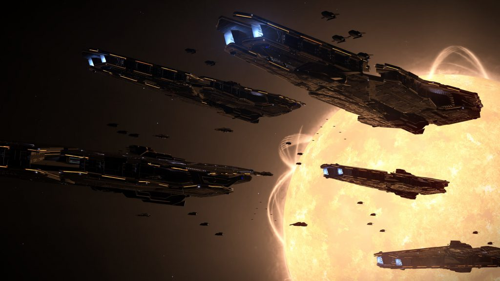

This is an archive of Drew Wagar‘s lore guide, available here with his kind permission. Drew is no longer actively maintaining his lore pages, and they may not be accurate post v2.4 of Elite Dangerous.
The Federation is the oldest and largest of the ‘Big Three’ super powers in the human occupied universe of Elite: Dangerous. It has been in existence for over a thousand years. The Federation can trace its origins back to the year 2060.
Even as far back as the early years of the 21st century, many large corporations controlled financial and human resources on a scale far bigger than some countries. In the years following the devastation of World War III in the 2040s, the influence of corporations increased dramatically into the 2050s onwards.
After the war, the dominant power was the United States of the Americas, and as the remaining other countries joined it over the next few decades, it was renamed the Federation of the United States and later “The Federation” as the implied reference to one of the pre-war powers was a block to the remaining countries joining it. It had a constitution and laws derived from the earlier powers, but much simplified.
Industrial activity led the way and ultimately became a founding ethos of the Federation. A base on Mars was constructed and the moon was heavily industrialised by 2080. This activity was primarily driven by the need to rebuild the shattered economy and ecology of the Earth after the depredations of war. Industrial activity quickly spread through the solar system. The stage was set for the purest interpretation of capitalism that humanity has ever known.
Interstellar probes were launched and the remarkable discovery of life in the Tau Ceti system spurred humanity to reach for the stars. A colony was set up thirty years later. Colonies were quickly set up in other locales in close proximity to Sol. Life was also discovered in the Delta Pavonis system, but almost immediately was made extinct by the actions of colonists there.
Similar problems were noted in Beta Hydri and Altair. Humanity began to spread unchecked, in an echo of the problems experienced in the previous century. Tau Ceti was warned by Sol to ensure the preservation of local lifeforms, but silence was the only response. Reports conflict, but independent records of the time (which generally favoured the Tau Cetians) indicate that the colony suffered under very harsh conditions and was simply unable to comply with Sol’s excessive demands. Over the next decade various ultimatums were sent, but they were all ignored. Sol’s patience eventually ran out.
The situation culminated in the first ever interstellar battle in the year 2241 between the forces of Sol, having endured a long voyage to reach the Tau Ceti system, and the rebels of Tau Ceti. The battle was inconclusive, forcing the Sol system to accept an unwelcome agreement to form a union of systems with a common agenda and independent rights – thus was the Federation born. Sol would dominate the affairs of the Federation for centuries, but the founding members were systems in their own right: Sol, Tau Ceti, Delta Pavonis, Altair and Beta Hydri.
Further systems were colonised in short order as humanity spread out amongst the stars. A notable colonisation target was the Achenar system in 2310. A leadership coup resulted in Achenar refusing to join the Federation and this defiance led to the birth of the Empire, during a series of wars that started in 2330 and lasted 50 years between the Federation and the colonists of Achenar. A treaty was signed in 2380, but was largely ignored hereafter.
The Federation ceded several systems to religious groups, notably Van Maanen’s Star, which was given to the ‘Guardians of the Free Spirit’ in 2480. The system remains permit locked even today. The years between 2500-2900 were marked by the increasing dominance of the corporations and the commercial and industrial exploitation of systems increasingly further from Sol. Many colonies were established for the purposes of mining and extraction, remaining major profit and loss centres even now.
In 2994 another conflict broke out between the Federation and the Empire in the Alioth system. The destruction wrought by this conflict, which raged off and on for over 200 years, resulted in the birth of the Alliance, when the residents of Alioth revolted against both super powers and pushed them out of their system.

A Fleet of Federal Farragut Class Battlecruisers
By 3300 the Federation remains the largest power, holding sway over dozens of star systems within the ‘bubble’ of space known as the core worlds. It maintains a significant military force in its navy, the pinnacle of which is the ‘Farragut’ Class battlecruiser, a vessel some 2 kilometres long. A deployment of this vessel tends to quickly end anything other than a very major military engagement.
The Federation remains driven by the corporations. Some of the most famous of them have histories entwined with the Federation. The Sirius corporation, perhaps the biggest of them all, operating out of the Sirius system, has a virtual monopoly on power generators and hyperdrive technology. Other manufacturers are famed throughout space; with names such as Core Dynamics, Lakon Spaceways, Whatt and Pritney, Durn and Resner, Faulcon DeLacy, Zorgon Peterson and Saud Kruger. These so called ‘mega-corporations’ control the birth, lives and deaths of their employees, providing for their every need and expecting absolute loyalty in return.
Technology is a major part of any federation citizen’s life, and the economy is driven by quite conspicuous (and often compulsory) consumption of new and exciting mod cons, luxuries and consumables. The society is very much ‘throwaway’ with the new and exciting replacing the ‘old and outdated’ often within months of acquisition. This drives a constant demand and supply culture, with employees spending the money they earn, further driving the success of the corporations. Strictly speaking the Federation is composed of ‘States’, in a similar manner to the U.S.A. of 21st century Earth, but on a much bigger scale. States can still be countries, but they could be entire systems. The Federation retains a presidential electoral system, but corporations influence this dramatically, expecting their employees to vote according to the corporation’s wishes. Corruption, bribery and underhanded influence are rife. Individual freedoms are suppressed in favour of profit. Greed is good.
The Federation’s capitalist model retains the economic advantages and disadvantages of its predecessors. There are many rich people, but there are many people in grinding poverty too, in such debt to the corporations that they can be regarded as wage-slaves.
The current president of the Federation, Zachary Hudson, was not elected by popular vote, but rather by a vote of no confidence in the liberal leadership under the then missing former president Halsey, prompting observers to postulate that the corporations are likely to be driving the agenda under a thin pretense of democracy.
Regardless, the Federation will continue to have a dramatic, and arguably the most significant, effect on the future of human inhabited space.